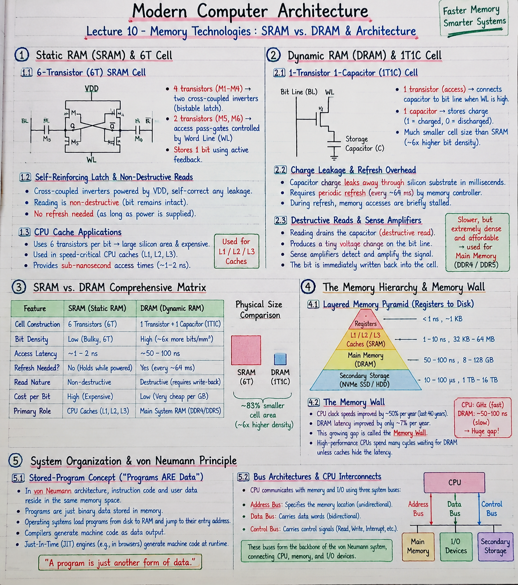

Short Notes & Visual Summary
Quick summary and key architectural trade-offs for Lecture 10:
- SRAM (Static RAM): 6 Transistors per cell (4T bistable latch + 2T access). Blazing fast (~1-2 ns), non-destructive reads, no refresh needed. Expensive & bulky; used for CPU Caches (L1/L2/L3).
- DRAM (Dynamic RAM): 1 Transistor + 1 Capacitor (1T1C). Extremely dense (~6x SRAM bit density) & cheap. Charge leaks from capacitor in ms; requires periodic refresh (~every 64 ms). Slower (~50-100 ns) with destructive reads. Used for Main Memory (RAM).
- Memory Hierarchy: Layers memory technologies from fastest/smallest at top (Registers \(\to\) SRAM Caches) to slowest/largest at bottom (DRAM Main Memory \(\to\) NVMe SSD).
- The Memory Wall: The growing performance gap between ultra-fast CPU clock speeds (GHz) and relatively slow DRAM access latency (50-100 ns).

Click image to open high-resolution version in new tab
Static RAM (SRAM) & 6T Cell
1.1 The 6-Transistor (6T) SRAM Cell Anatomy
Static RAM (SRAM) stores bits using active transistor feedback. Each 1-bit SRAM cell is constructed from 6 Transistors (6T):
- 4 Transistors: Form two cross-coupled CMOS inverters that act as a bistable latch.
- 2 Transistors (\(M_5, M_6\)): Act as access pass-gates connecting the internal storage nodes (\(Q, \bar{Q}\)) to the complementary Bit Lines (\(BL, \overline{BL}\)) when the Word Line (\(WL\)) is driven high.
1.2 Self-Reinforcing Latch Feedback & Non-Destructive Reads
Because the cross-coupled inverters are powered by \(V_{DD}\), the feedback loop actively holding \(Q\) and \(\bar{Q}\) is self-reinforcing and self-healing. Any minor charge leakage is corrected immediately by the power supply. Reading an SRAM cell is non-destructive because bit line sensing does not discharge the bistable latch.
1.3 CPU Cache Applications (L1 / L2 / L3)
Because SRAM requires 6 transistors per bit, it occupies substantial silicon die area and is expensive. Consequently, SRAM is reserved for speed-critical on-chip CPU Caches (L1, L2, and L3) where sub-nanosecond response times are mandatory.
Dynamic RAM (DRAM) & 1T1C Cell
2.1 The 1-Transistor 1-Capacitor (1T1C) Cell
Dynamic RAM (DRAM) sacrifices active feedback to achieve maximum silicon density. Each bit is stored as electrical charge on a microscopic trench capacitor using a 1-Transistor + 1-Capacitor (1T1C) cell:
- Charged Capacitor (\(+V_{DD}\)): Logical 1.
- Discharged Capacitor (\(0\text{V}\)): Logical 0.
- 1 Access Transistor: Connects the storage capacitor to the Bit Line when Word Line is activated.
2.2 Charge Leakage & Periodic Refresh Overhead
Unlike SRAM, DRAM stores bits passively. Charge on the tiny capacitor leaks away through the silicon substrate within milliseconds. To prevent data corruption, a dedicated memory controller must perform a Refresh Cycle across every row roughly every 64 ms (reading and rewriting the charge). During refresh, memory accesses are briefly stalled.
2.3 Destructive Reads & Sense Amplifiers
Reading a DRAM cell connects the capacitor to a long bit line, causing the capacitor to dump its tiny charge. This process is destructive (drains the cell) and produces a minuscule voltage shift on the bit line. Sensitive Sense Amplifiers detect this tiny voltage shift, amplify it to full logic levels, and immediately write the bit back into the cell.
SRAM vs. DRAM Comprehensive Matrix
3.1 Density, Speed, Power, and Cost Trade-offs
No single memory technology is simultaneously fast, dense, and cheap. The engineering trade-offs between SRAM and DRAM are summarized below:
| Feature | SRAM (Static RAM) | DRAM (Dynamic RAM) |
|---|---|---|
| Cell Construction | 6 Transistors (6T) | 1 Transistor + 1 Capacitor (1T1C) |
| Bit Density | Low (Bulky, 6T footprint) | High (~6x more bits/\(\text{mm}^2\)) |
| Access Latency | Blazing Fast (~1–2 ns) | Slower (~50–100 ns) |
| Refresh Needed? | No (Holds while powered) | Yes (Periodic refresh every ~64 ms) |
| Read Nature | Non-destructive | Destructive (Requires write-back) |
| Cost per Bit | High (Expensive) | Low (Very cheap per GB) |
| Primary Role | CPU Caches (L1, L2, L3) | Main System RAM (DDR4/DDR5) |
3.2 Physical Silicon Footprint Comparison
Replacing a 6T SRAM cell with a 1T1C DRAM cell reduces cell area by roughly 83%. This density ratio explains why a CPU die can only fit a few megabytes of SRAM cache, while motherboard DIMM sticks hold 16 to 64 gigabytes of DRAM.
The Memory Hierarchy & Memory Wall
4.1 Layered Memory Pyramid (Registers to Disk)
Modern computer systems combine multiple memory technologies into a hierarchical pyramid, exploiting Locality of Reference (Temporal and Spatial) to create the illusion of a memory system that is as fast as registers and as large as a hard drive.
- CPU Registers (Flip-Flops): < 1 ns, ~1 KB capacity, extreme cost.
- L1 / L2 / L3 Caches (SRAM): 1–10 ns, 32 KB – 64 MB capacity, high cost.
- Main Memory (DRAM): 50–100 ns, 8 GB – 128 GB capacity, moderate cost.
- Secondary Storage (NVMe SSD / Hard Disk): 10–100 \(\mu\text{s}\), 1 TB – 16 TB, very low cost.
4.2 The Memory Wall: CPU Speed vs. DRAM Latency Gap
Over the past 40 years, CPU clock speeds improved by ~50% per year, while DRAM access latency improved by only ~7% per year. This growing performance divergence is known as The Memory Wall. High-performance CPUs spend significant idle cycles waiting for DRAM memory requests unless hardware caches absorb the latency.
System Organization & von Neumann Principle
5.1 Stored-Program Concept ("Programs ARE Data")
The foundational blueprint of modern computing is the von Neumann Architecture, centered on the Stored-Program Concept: instruction code and user data reside in the exact same memory space as binary numbers.
- Software Flexibility: Operating systems load programs into memory by copying instruction bytes from disk to RAM and jumping to their entry address.
- Compilers & JITs: Compilers emit machine instructions as data output. Just-In-Time (JIT) engines inside web browsers generate machine code at runtime and execute it.
5.2 Bus Architectures & CPU Interconnects
The CPU communicates with memory and I/O peripherals over three primary system buses: the Address Bus (specifies location), the Data Bus (carries words), and the Control Bus (signals Read/Write commands).
Original PDF Notes
Below is the original PDF document for your reference: